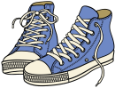

中国旅行の持ち物・準備品
中国旅行に必要な持ち物をご紹介いたします。必須準備品
これは必ず準備しましょう。忘れると致命的です。パスポート
 忘れたらもちろん飛行機には乗れませんし、現地で紛失や盗難に遭うと、再発行されるまで日本へ帰ることが出来ません、現地での再発行は手続きが非常に面倒になりますし、他のツアー客や旅行会社にも大きな迷惑がかかります。お金よりも大事なものだと認識してください。旅行中は常に携帯してください。
忘れたらもちろん飛行機には乗れませんし、現地で紛失や盗難に遭うと、再発行されるまで日本へ帰ることが出来ません、現地での再発行は手続きが非常に面倒になりますし、他のツアー客や旅行会社にも大きな迷惑がかかります。お金よりも大事なものだと認識してください。旅行中は常に携帯してください。 現金
忘れることはないと思いますが、これもないと致命的なのでご注意を。日本国内で両替するとレートが非常に悪いので、ホテルにある正規両替所か、中国の銀行で少しずつ替えるのがいいでしょう。中国元の最高金額は１００元（日本円で１６００円程度）と額面が小さいので、高額両替すると大きくかさばるので注意してください。１万円替えると、およそ６枚の１００元札に替わります。
航空券
ツアーの場合は、旅行会社が替わりにやってくれる場合もありますが、これも無くすと面倒です。パスポート同様、特に往復切符の場合は、旅行中無くさないように注意してください。
海外旅行保険証券
万一の場合に必ず必要です。パスポート同様常に携帯するようにしてください。
衣類
季節の影響を考えて、必ず少し余分に持っていきましょう。暑いのは脱げばそれでOKですが、寒いのに着るものがないのは致命的です。
ティッシュペーパー
ホテルや空港などを除き、中国の一般的なトイレには紙がないのが常識です。現地でも購入できますが、念のためポケットティッシュは用意しておきましょう。
旅行カバン
中国では空港での荷物の扱いもかなり雑です。強度の強いものを用意しましょう。
一般準備品
旅行する上で一般的に必要と思われるものです。チェックしておきましょう。常備薬
一般的な常備薬（胃薬、下痢止め、風邪薬、頭痛薬、酔い止めなど）は一通り準備しましょう。ただ、水などが合わない下痢の場合は一般的な下痢止めも効かない場合もあるので、過度の使用は避けましょう。
使い捨てマスク
都市部の空気は日によってかなり悪い日があります。PM2.5対策にマスクは用意しておくとよいでしょう。
飛行機内やホテルも乾燥しがちですので、湿式タイプのマスクもあると便利ですね。
各種クレジットカード
中国では、大きな高級店を除きクレジットカードに対応している店が少ないので出番は少ないです、空港の免税店やホテルの支払いなどには使えますので、いざというときのために１枚あると便利です。出来れば海外旅行保険が付帯したものがあると尚OKです。
カメラ、デジカメ、ビデオカメラなど
 中国の観光地では、自分で歩く場所も多いため、一般的にはコンパクトタイプがお勧めですが、画質にこだわるなど高級カメラを持っていく場合は盗難や破損に十分気をつけてください。フィルムやメモリーカード、各種充電器なども忘れずに。
中国の観光地では、自分で歩く場所も多いため、一般的にはコンパクトタイプがお勧めですが、画質にこだわるなど高級カメラを持っていく場合は盗難や破損に十分気をつけてください。フィルムやメモリーカード、各種充電器なども忘れずに。各種重要書類のコピー
パスポート、航空券、保険証券、免許証などのコピーを各１部持っていくようにしましょう。万一本物を紛失したときに、再申請がスムーズに行く場合があります。
クレジットカード、携帯電話などの緊急連絡先
クレジットカードや携帯電話が盗難にあった場合、すぐに停止処理などの連絡が出来るように、事前にサービスセンターの連絡先などを控えておくようにしましょう。
顔写真控え
万一パスポートなどが盗難にあった場合、再申請する際に必要。現地で写真を撮ってもいいですが、面倒なのであらかじめ日本で撮っておいた証明写真を数部一緒に準備しておきましょう。
携帯電話・スマートフォン
最近の携帯電話やスマホは海外で使える機種が多いです。あえてこのために買い換える。。。とまではいいませんが、国際通話機能がついている携帯であれば、簡単に申し込みが出来る場合があります。通話料は高いですが、万一のために携帯があると安心です。（空港でレンタルも可能です）
現地でのメールやパケット通信は控えましょう、超高額になります。
最近では海外定額通信（円/1日）というプランもありますので、携帯電話会社のサービスを確認するのもいいですね。
靴
運動靴かスニーカーが一番です。特にヒールやブーツなどは、歩くことが多い中国では非常につらいです。どうしてもという方は必ず運動靴と合わせて別にもっていくことをお勧めします。また新品は控えましょう。
一般衣類
下着、靴下など、行く場所に合わせて準備しましょう。
変圧器
電動シェーバー、パソコン、携帯ゲーム機などを充電する場合、１００V専用ですと中国では使えません。変換プラグと変圧器は用意しましょう。最近のものは海外対応（１００－２４０V対応）のものがほとんどです。
メモとペン
さまざまなコミュニケーションなどで必要です。１セットは持って行きましょう。
化粧品
現地でも購入可能ですが、使い慣れたものを持っていきましょう。
リュックや両手が使える肩掛けのカバン
中国では歩くことが多いので移動用にはリュックがおすすめです。両手が開くので非常に使いやすいです。（カメラや飲料水、タオルなどがある小さめのもので十分です、チャックに鍵をつけると効果的です）
推奨準備品
なくても差し支えは特にありませんが、旅を楽しく過ごすための便利グッズ電子辞書、電卓
漢字が使える中国ですが、やはり意味を調べるにはあったほうがいいです。最近はしゃべったり、翻訳が出来るタイプもあります。電卓は言葉が通じない値段交渉の際に非常に便利です。
洗面用具
石鹸、歯ブラシ、タオルなどは、一般的に旅行社のツアーで泊まるホテルには大抵置いてあるので、まず必要ありませんが、心配な方は携帯用を準備しましょう。また汗を拭いたりするのにタオルは１つ持っていくと便利です。 髭剃りやシャンプー、リンスなども普通はホテルに置いてありますが、自分のを使いたい場合は小型の容器などに入れて日本から持ってきてもOKです。 （液体は機内持ち込みに制限があるので注意）
携帯ゲーム機
退屈な空港ロビーや飛行機内、ホテルでの暇つぶしにも最適です。飛行機内での無線通信機能はOFFにしましょう。
使い捨てカイロ
寒い場所に行くときには何枚か持っていくと便利です。
予備の電池、フィルム、メモリーカードなど
現地での購入は高くて質が悪いものも多くあります。事前に準備しましょう。
お土産用の袋
中国で買ったお土産を入れるための袋、現地のは強度が弱く途中で破れてしまう可能性もあるので、２つほど大き目の丈夫なビニール袋を用意しておくと便利です。
地図、ガイドブック
自由行動の時や、観光地の由来や名前などを学びながら見てみるのもいいでしょう。
中国語会話本など
いきなり話すのは無理にしても、その部分を相手に見せるだけでも意味は十分通じます。日常会話編よりも、旅行などで使う実用会話（とっさのひとこと）系の方がいいです。
腕時計、目覚まし時計
時差は日本より１時間遅れです。時差ボケはほとんどありませんが、お互いの時間を把握しましょう。
中国旅行注意に戻す